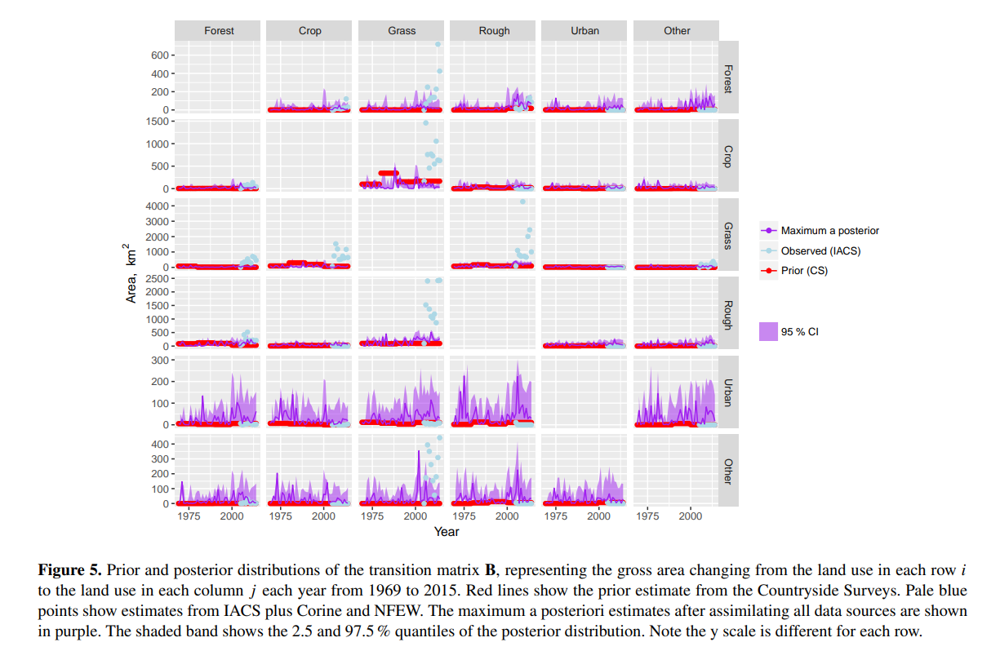

This document outlines the Bayesian framework described in Levy et al. (2018), “Estimation of Gross Land-Use Change and Its Uncertainty Using a Bayesian Data Assimilation Approach” (Biogeosciences, 15(5), 1497-1513). The paper introduces a novel approach for estimating land-use change by addressing the challenge posed by multiple sources of land-use maps of an area. By employing a Bayesian framework, these diverse sources are treated as prior information, which is then assimilated to generate a more refined and cohesive land-use map.
The Bayesian framework was applied to what the author was referring to data assimilation, which defines as “an approach for fusing observations with prior knowledge (e.g. mathematical representations of physical laws; model output) to obtain an estimate of the distribution of the true state of some phenomenon”. In this case, the data assimilation process corresponds with the prior and likelihood development process for the Bayesian framework.
Research Question
The research question of this paper is
How can a Bayesian hierarchical model be developed and applied to integrate multiple data sources to produce accurate and spatially explicit estimates of land-use change over time?
In a case study, they applied the approach to Scotland over the period 1969-2015
Model Description
Data Structure
We begin with historical land use maps, denoted as \(\mathbf{U}\), which represent land use types at each grid location on the map. Each grid location is specified by coordinates \(x\) and \(y\), making \(\mathbf{U_{xy}}\) a vector that describes land use at a particular location. By utilizing maps from multiple time points, we can construct a land use transition matrix, \(\mathbf{B}\), for each time step \(t\).
The land use transition matrix \(\mathbf{B}\) is defined as:
where each \(\beta_{ij}\) element represents the area of land use class \(i\) (rows) that transitioned to class \(j\) (columns) at time step \(t\), measured in square kilometers (km2).
To calculate \(\beta_{ijt}\), we use data from \(\mathbf{U_{xy}}\):
where \(l\) denotes the grid size of the map. By knowing these variables, we can express the net change in land use \(\Delta A_{ut}\) using the net area difference:
\[
\Delta A_{ut} = A_{ut} - A_{ut-1} \tag{2}
\]
Alternatively, we can calculate \(\Delta A_{ut}\) using the transition matrix \(\mathbf{B}\) by determining the gross gains (column sum vector, \(\mathbf{G_t}\)) and the gross losses (row sum vector, \(\mathbf{L_t}\)):
\[
\Delta A_{ut} = G_{ut} - L_{ut} \tag{4}
\]
where
\[
G_{ut} = \sum_{i=1}^{n_u} \beta_{iut}
\]
and
\[
L_{ut} = \sum_{j=1}^{n_u} \beta_{ujt}
\]
Knowing the parameters of \(\mathbf{U}\), \(\mathbf{B}\), and \(\mathbf{A}\), the author did two step of methods:
The author first applied the Bayesian approach to estimate the parameters in \(\mathbf{B}\). In this framework, we specify prior information about \(\mathbf{B}\) and use the likelihood based on partial observations of \(\mathbf{U}\) and \(\mathbf{A}\). This results in a posterior distribution for \(\mathbf{B}\).
The authors then use this posterior distribution of \(\mathbf{B}\) along with a probability weighting matrix \(\mathbf{W}\) to conduct a weighted sampling operation. This process simulates where land-use changes are likely to occur, generating posterior realizations of \(\mathbf{U}\).
Estimating posterior distribution of transtition matrix
The Priors
The priors are derived from data provided by the Countryside Survey (CS), which offers direct observations of \(\mathbf{B}\) over multiple years. This results in a matrix of \(\mathbf{B^{prior}}\).
The Observations
The Agricultural Census (AC) provided the total area in the agricultural land use, which is one out of six land use category being analyzed in this paper. This data is then can be used as the \(\mathbf{A_{ut}^{obs}}\) . By using the information from \(\mathbf{B^{prior}}\) into \(Eq. 4\) and combining different \(t\) observation years, \(\Delta \mathbf{A_{ut}^{obs}}\) could be gained.
The EDINA Agricultural Census (EAC) provided the detailed information of the \(\mathbf{L_t}\) and \(\mathbf{G_t}\).
Using Corine, IACS, and FC maps, \(\mathbf{U^{obs}}\) matrices are gained and used as an input for \(Eq. 3\), which resulted in \(\mathbf{B_{t}^{obs}}\) as the observed transition matrix for each year.
The Likelihoods
These multiple data sets were being used by the author to develop each of the likelihood based on the each observation variables.
Using the \(\Delta \mathbf{A_{ut}^{obs}}\) information, \(\mathcal{L_{net}}\) was established, which is the likelihood based on the overall area change that follows a normal distribution:
with \(\sigma_{ut}\) being the observational error of the data.
Using the \(\mathbf{G}\) and \(\mathbf{L}\), the likelihood of the gross area change (\(\mathcal{L_{gross}})\) can be calculated, however because of the nature of the data, the likelihood distribution is corrected using a skew parameter, making this a skewed normal distribution
where \(\phi\) is the standard normal probability density function, \(\Phi\) is the corresponding cumulative density function, and \(\alpha\) is the skew parameter.
Using \(\mathbf{B_{t}^{obs}}\), a likelihood of the predicted transition matrix (\(\mathcal{L}_{B}\)) can be calculated as follow:
While the authors did not provide any specific code to show the analysis process, they mentioned that they used BayesianTools package instead of running it on rjags. Nevertheless, the simplified rjags model framework would look something like this:
Code
model_dummy <-"model{### PRIORS #### B_prior represents prior B matrix about land use transitions from the CS data.for (i in 1:n_u) { # n_u is the total number of land use classes for (j in 1:n_t) { #n_t is the number of timesteps B[i, j] ~ dnorm(B_prior[i, j], tau_B) # tau_B is the precision (inverse of variance) of the prior distribution (sigma_B^2)# sigma_B was calculated using bootstraping approach }}# Prior for observational error# Assuming that the standard deviations are between x1 and x2 which the author did not specifically defined (will be explained in the next part)# sigma_A, sigma_L, and sigma_G represent the standard deviation for the observational errors.sigma_A ~ dunif(x1, x2) sigma_L ~ dunif(x1, x2) sigma_G ~ dunif(x1, x2)# each sigma will be used to calculate each tau with tau = 1/sigma^2tau_A <- 1/sigma_Atau_L <- 1/sigma_Ltau_G <- 1/sigma_G### LIKELIHOOD #### Likelihood for L_net (overall area change)# delta_A_obs_ follows a normal distribution centered at ΔA_pred_ut with variance based on sigma_A.for (u in 1:n_u) { for (t in 1:n_t) { delta_A_obs[u, t] ~ dnorm(delta_A_pred[u, t], tau_A) }}# Likelihood for L_gross (gross area change) with skewed normal distribution# L_obs_ut and G_obs_ut follow skewed distributions based on parameters sigma_L, sigma_G, and skew parameter alpha.for (u in 1:n_u) { for (t in 1:n_t) { L_obs[u, t] ~ dsnorm(L_pred[u, t], tau_L, alpha_L) G_obs[u, t] ~ dsnorm(G_pred[u, t], tau_G, alpha_G) }}# alpha_L and alpha_G are skewness parameters.# Likelihood for L_B (predicted transition matrix)# beta_obs_ijt follows a normal distribution centered at beta_pred_ijt with variance based on sigma_B.for (i in 1:n_i) { # n_i is the t-1 land use class for (j in 1:n_j) { # n_t is the t land use class for (t in 1:n_t) { # n_t is the time step beta_obs[i, j, t] ~ dnorm(beta_pred[i, j, t], tau_B) } }}# Unelaborated overall likelihood: summation of each log likelihoods} }} "
The overall likelihood is a sum of the log of each of the likelihoods (equation not elaborated).
After defining model, we could then continue to fit the model. To simplify the process, the observed data could be a list object that stores the map information (possibly turn them first into matrix format). This list object is named data_input in this example. The information given in the text article is that “nine chains were used, with 100 000 iterations in each. To establish the initial\(B\)parameter values for one of the chains, a least-squares fit with the\(\Delta{A}\)was used. Other chains were over dispersed by adding random variation to this best-fit parameter set.”.
Since we have a specific initial values for B, we could define it specifically. But to keep things simple, as the same concept with the inputs, the initial values of the iterations can be defined as stored as a list object which in this case is called inits_list.
Why did the author chose this parameters to run the MCMC?
Note that there are five types of callouts, including: note, warning, important, tip, and caution.
Estimating Updated Land Cover with the New Transition Matrix
After obtaining \(\mathbf{B^{post}}\), the authors had the information of each land use change area allocation from class \(i\) to \(j\) for each time step \(t\) . Using this information, then used the \(\mathbf{U^{obs}}\) from \(t\) and \(t-1\) to allocate cell grids that are being sampled for each transition from \(i\) to \(j\). The rule of the sampling is represented as follow:
with \(p_{m}\) being the probability of cells being misclassified in \(U^{obs}\) .
Example of weighted sampling operation
It is known from the \(\mathbf{B^{post}}\) that seven grid cells change from grass to crop from 2014 to 2015. The model selects candidate cells that are crop in 2015, with a higher probability given to the same cells that were grass in 2014. If the posterior estimate \(\beta_{ijt}^{post}\) (the predicted area of change from crop to grass) is smaller than the observed value \(\beta_{ijt}^{obs}\), only a subset of the high-probability cells will be selected. The process results in the number of cells that most likely to change are those identified as crops in 2015 and as grass in 2014, based on the weighting criteria \(\mathbf{W}\).
The method to conduct weighted sampling is not elaborated in this report, but could be done in R with different packages available.
Directed Acyclic Graphs (DAG)
The simplified structure of this Bayesian application can be visualized as follow
Results
MCMC result: Although not shown, the authors ran several convergence diagnostics and mentioned that the MCMC converged, providing a reasonable estimate of the posterior distribution of B.
 Figure 5 reveals diverse patterns in how the posterior distribution results differ across changes in \(\beta_{ij}\), compared with the prior distribution. For example, from visual judgement, there’s difference between the prior and posterior distribution in changes to urban land use compared to other change trajectories. These significant differences suggest that the model learned considerably from the data, while minimal differences indicate a stronger reliance on prior information.